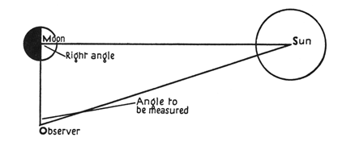
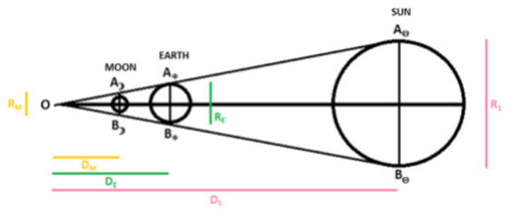
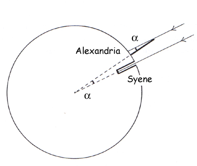
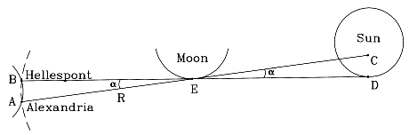
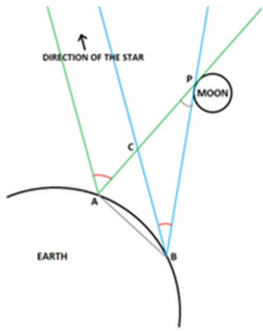
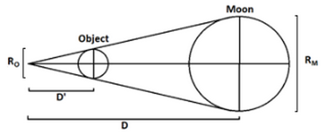
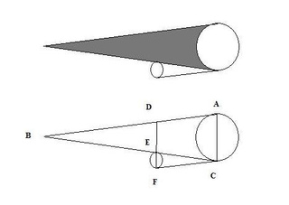

Long before the invention of high-tech optical instruments, the ancient Greeks have already measured the distance from Earth to the Moon through geometric approaches. Among the most known attempts, Aristarchus' method based on the comparison of the lunar and solar position during quarter Moons and lunar eclipses results a distance that is only half of the actual mean value. Later, Hipparchus employs a hypothetical solar parallax produced during a solar eclipse to estimate a range of possible lunar distances. Yet, a simple and effective solution is Hipparchus alternative method founded essentially on the pure coincidence that the Moons shadow ends on the surface of the Earth.
The space between Earth and its satellite is 1.3 light seconds, three days in an Apollo flight (O'Neill, 2008), ten times the Earth's circumference, or more than the triple of the distance that an average American travels by feet in a lifetime.[1] 384,400 kilometers with a variation of ± 21,296 km caused by the elliptic-shaped orbit, this number would take 0.3 billions 30 cm scholar rulers to measure. Yet, it is known since ancient Greeks, long before the invention of metric rulers. To obtain an estimation of the lunar distance, it suffices to use some simple primitive apparatus and let the "great book of Nature" reveals the answer in a language of "triangles, circles, and other geometrical figures".[2]
The first historical records of celestial distance measurement dates back in 300 B.C. where a Greek astronomer named Aristarchus of Samos uses his observations of heaven body motions to estimate the solar and lunar distances. In his extant work On the Sizes and Distances of the Sun and Moon, he proposes that the Earth rotates along an axis and orbits around the Sun, that the Moon is spherical, illuminated by the Sun and smaller than Earth[3] (Berggren, 2007). Consequently, he deduces two methods of measurements. The first consists of evaluating the Sun-Moon angular distance (φ) when the Moon appears to be half illuminated and using some properties of triangles to obtain the ratio of the solar and lunar distance (see Figure I). The result that he obtained is 19:1 (Hirshfeld, 2004) – an error of 95 %.
|  | Figure I: Aristarchus' first method This method if derived from the hypothesis that a circle separating the illuminated and darkened parts of the Moon (called the "dividing circle") inclines to the observer"s sight during half Moons (Berggren, 2007). |
On the first sight, φ seems close to a right angle. Indeed, the value is only 9 arcminutes less than 90° (89.85°)[Drawing] (Hirshfeld, 2004), definitively impossible to measure with ancient instrument in addition to the ambiguity about the exact time when a half Moon occur and position of the Sun that is blurred by its own light. On the other hand, Greek philosophers might prioritize the geometry over numerical value; Aristarchus may have simply adopted a reasonable number to demonstrate how his method works (Hirshfeld, 2004). The chosen value is 87°, equivalent to the assumption that the time from first quarter Moon to the third is one day longer than the opposite.[4] An error of 3.2 % seems negligible unless such small difference results a tremendous inaccuracy on the ratio. For example, taking φ = 89° can move the Sun three times further than Aristarchus' scripted estimation (see Appendix B).
Such demands in precision can potentially narrow down the efficacy and usability of Aristarchus' first method. Conversely, the effect of imprecision is relatively reduced for objects far away from Earth, such as Venus (see Appendix B). Yet to see the phase of Venus, a telescope is a necessity.
A method to relate the Sun-Moon ratio with a more human-friendly measurement, such as Earth's radius, is Aristarchus' second method. During a lunar eclipse, the Sun, Earth and Moon can be linked with three similar triangles (see Figure II). Using a pinhole, it is possible to project the light reflected from the Moon onto a piece of paper to record its position before and after the eclipse, which yields the angular diameter of Earth's shadow (Sigismondi, 2011). Alternatively, it is possible to record the lunar crossing time in the shadowed region and deduce the angular distance travelled using simple mechanics (Hirshfeld, 2004). Aristarchus finds that the shadow is twice the lunar angular diameter (Hirshfeld, 2004) which he measures to have a size of two degrees (Berggren, 2007). Assuming that the apparent lunar and solar sizes are the same, he concludes that the Moon's distance is 30 Earth radii, and the size of the Sun is about seven times bigger than the Earth. Compared to the actual values, about 60 and a 109 respectively, the main source of error is certainly the application of his 19:1 ratio. Moreover, the apparent lunar size can be biased by optical illusions due to psychological effect (e.g.: the Moon illusion) (O'Meara, 2010) or changed as it passes from apogee to perigee and vice-versa.[5] The imprecision of the constant value π can also be a factor.
|  | Figure II: Aristarchus' second method by the use of lunar eclipse Using similar triangle properties, the DM/RE ratio can be derived from DS/DM = RS/RM = 19/1. |
Aristarchus' work has exerted enlightenment on some other philosophers. In particular, the Greek mathematician Archimedes mentioned about Aristarchus's theory on the Earth's motion in his Sand-Reckoner, wherein he tries to estimate the amount of sand that the universe can contain with some original mathematical insights. He deduces that a shift of stellar position should be observed on a moving Earth. By the absence of annual parallax of fixed stars, he concludes that the universe must be much larger than what has been commonly believed (Neugebauer, 1942). "Large," as what is known nowadays, is correct; however "large" based on Aristarchus ratios would also imply a much larger Earth.
A spherical conceptualization of the Earth is probably developed in the Pythagorean School back in 500 B.C. In the following centuries, a few have made some estimations of Earth's circumference by theoretical proofs. In particular, Aristotle claims 400,000 stadia while Archimedes declares 3,000,000 stadia and some others, including Aristarchus, 300,000 stadia (Diller, 1949).
|  | Figure III: Eratosthenes' method The presence of a shadow in Alexandria while sunlight hit exactly perpendicular to the surface of Syene suggests a specific relationship between of Earth's size and its surface curvature. |
The first experimental derivation of Earth's size occurs in 276 B.C., when the Greek astronomer, a chief librarian in Alexandria, Eratosthenes of Cyrene, encounters the words of some travelers about a pole's shadow that disappears during summer solstice in Syene (now Aswan), 800 km away southeast (see Figure III) (Mota, n.d.). His measurement, as in the most used reference from Cleomedes, shows that sunlight casts shadows of a fiftieth of a circle (7.2°) in Alexandra and (Mota, n.d.) thus the Earth is 250,000 stadia in circumference[6] (39,690 km or 6,316 km in radius)[7] (Diller, 1949).
Based on Aristarchus's ratios, the lunar distance is 189,480 km and the sun, a super-dwarf star of size between Saturn's and Uranus' [8] at 12.2 light seconds away.[9] These numbers shall be refined in less than a hundred years, when Hipparchus, another Greek astronomer, uses the idea of a least and a greatest solar distances to obtain an interval of possible lunar distances.
Unlike Aristarchus, Hipparchus is completely absorbed by geocentrism and even attempts to measure the Sun's orbit, known as the ecliptic (Maeyama, 1998). In his On Sizes and Distances, two methods are demonstrated to measure the distances using eclipses. The first one consists of measuring the angular distance between the Moon and the Sun during a solar eclipse (see Figure IV). On this particular event, the Moon passes through the ecliptic plane, covering the Sun entirely in the city of Hellespont (now called the Dardanelles), at the other side of the Mediterranean Sea, while missing 1/5 of the solar disk in Alexandria (Toomer, 1974). This parallax angle he assumes is 7 arc minutes (about 0.1°), implying that the Sun is about 0.5° in diameter (Toomer, 1974).
|  | Figure IV: Solar Parallax At Hellespont, the Moon and the Sun are completely aligned with each other while the Sun has a small uncovered portion in Alexandria. |
The data might seem suspicious. As Ptolemy, a Greek descent astronomer, criticizes 300 years later, any amount of solar parallax should be too small to be measured with antiquity method. Even the existence of an observable solar parallax on Earth is subject to uncertainty. However, a non-detectable optical phenomenon to naked eye is not implicitly inexistent. For Hipparchus, it means that the angle is less than an observable amount, and thus he fixes it at a reasonable value: 7' (Toomer, 1974). Assuming that the Earth's radius is of the size of a dot compared to the solar radius, he estimates the solar distance to be 490 Earth radii[10] using his chord table, the instrument that gives birth to trigonometry (Dorner, n.d.). Again supposing that the apparent sizes of the Moon and the Sun are the same, he arrives to a distance of 67.3 Earth radii (Toomer, 1974), which is 5.4 % more than the lunar apogee.
|  |
| Figure V: Lunar Parallax Given latitude and longitude of point A and B, the theory is that one can use triangulation to measure the distance of the Moon by measuring the angular distance between a faraway star and the Moon. |
This method does not only output one specific value. Hipparchus also finds that an increase in solar distance decreases the lunar distance. As former tends to infinity, the least mean distance becomes 59 Earth radii (Toomer, 1974), which is 3.5 % more than the lunar perigee, but 1.6 % different [Text Box]from the mean lunar distance. By chance, Ptolemy arrives to exactly 59 radii[11] in his experiment with lunar parallax (Toomer, 1974) (see Figure V) by using an Earth circumference of 180,000 stadia[12] (Diller, 1949). However, he has the burden to deal with a series of erroneous results probably due to the high amount of precision needed for this type of experiment. Much like Aristarchus' first experiment, a fraction of Earth's circumference is to the lunar distance as the latter is to the solar distance. But Ptolemy knows what he is looking for, thus selects the data that gives the desired results (Toomer, 1974).
The above mentioned methods either involves sophisticated mathematics or produce results sensitive to the small inaccuracy and data imprecision. Hipparchus's first method also bases on the assumption that a solar parallax can exists, which limits experimental validation of his work considering the optic instrument present at that time. Nevertheless, his second method is simply based on Thales Theorem, flourishing accuracy up to 2 % difference to the actual mean lunar distance.[13]
In fact, Aristarchus and other precedents astronomers might have already found the essence to derive this method. All one need to know is the ratio of Earth's shadow at the position where Moon crosses and lunar diameter (RE'/RM), and the ratio of the lunar distance and size (DM/RM). Hipparchus measures RE'/RM = 2.5 [14] (0.5 more than the ratio that Aristarchus' estimation) (Toomer, 1974). For the second piece of information, one needs simply to use a small circular piece of paper and apply Thales Theorem.
Discovered by Thales of Miletus in 600 B.C., the theorem states that any line parallel to a segment of a triangle and intersecting the other segments creates a similar triangle to the first (Beaudry, n.d.). The shadow of the Earth created by sunlight also behaves in the same way. As in Aristarchus' second method, the configuration of the Sun, Moon and Earth forms a series of spheres circumscribed by a cone. Similarly, one can apply this principle and insert the Moon and a small circular object into a cone to obtain DM/RM ratio (see Figure VI). By experiment, this method gives a value around 108 (see Appendix C) (Beaudry, n.d.).
|  | Figure VI: Distance-Diameter Ratio Holding a circular object until it matches the apparent size of the Moon, this configuration result two similar triangles, i.e.: D/RM = D'/RO. |
It would be impossible to relate RE'/RM and DM/RM if the Moon's were not coincidently at its current location. At one solar distance, it has been measure with a similar procedure that the shadow of any sphere or disk facing the Sun has length 108 diameter of that object (Beaudry, n.d.). Therefore, the shadow of Earth is 108 RE and the shadow of the Moon is 108 RM approximately. It follows that DM = 108 RM and RE' + RM = RE (see Figure VII). Preforming 108/3.5, behold a lunar distance of 31 Earth diameters,[15] or in Eratosthenes's Earth's circumference, 2.5 megastadia (390,000 km).
|  | Figure VII: Hipparchus' Second Method The shadow of the Moon is similar to the shadow of the Earth. Placing them next to each other as in the diagram, the parallelogram ACDF is obtained. Thus, the side AC is equal to side DF, i.e.: RE' + RM = RE. |
After the downfall of the Roman Empire, the rest of the story has stayed dormant until its awakening in the sixteenth century by a group of revolutionary scientists, namely Johannes Kepler with his elliptic orbits and Galileo with his telescope (Mackenzie, 2003). Later, a series of scientific achievements have led earthlings to implant the first retroreflector arrays on the Moon in 1969, bringing a new level of geometry, integrated with particle physics, that has not only improved the precision of the measurements, but also the understanding of Moon's motion and interaction with Earth gravity (Dickey, 1994). While today's triumph is continuously transcending yesterday's glory, mankind has not thrown their ancestors into oblivion. On the near side of the Moon, Aristarchus, Archimedes, Eratosthenes, Hipparchus, Ptolemy, they each have a special crater assigned with their named, along with hundreds of other scientists, forever facing the beauty of Earth and the space beyond.
Earth | |
| Mean Radius | 6,371 km |
| Radius (Eratosthenes) | 6,316 km (or 5,969 km) |
| Earth shadow - Moon diameter ratio (RE'/RM) | 2.7 |
| RE'/RM (Aristarchus) | 2 |
| RE'/RM (Hipparchus) | 2.5 |
Moon | |
| Apogee | 405,696 km |
| Perigee | 363,104 km |
| Mean Radius | 1,737.5 km |
| Phase cycle | 29.53 days |
| Mean distance from Earth | 384,400 km |
| Distance (Aristarchus) | 189,480 km |
| Greatest distance (Hipparchus using parallax) | 425,067 km |
| Least distance (Hipparchus using parallax) | 372,644 km |
| Distance (Hippachus using shadows) | 396,103 km |
Sun | |
| Mean radius | 695,508 km |
| Radius (Aristarchus) | 44,212 km |
| Mean distance from Earth | 149.600 Gm |
| Distance (Aristarchus) | 3.600 Gm |
| Least distance (Hipparchus) | 3.095 Gm |
Venus | |
| Distance from the Sun (semi-major axis) | 108,209,475 km |
Other | |
| Saturn's mean radius | 58,232 km |
| Uranus' mean radius | 25,362 km |
The data are taken from "Solar System Exploration: Planets." Solar System Exploration: Planets. NASA, n.d. Web. 08 Dec. 2012.
Desepite that the most common laws in trigonometry is not yet discovered during Aristarchus' time, Aristarchus' Inequality, that is probably used by himself to calculate lunar distance, will not be applied for the purpose of this analysis.
Let the distanc between the Earth and the Sun be the hypotenuse of the right triangle when an observer on Earth see the Moon exactly half illuminated. Then a relationship between the Earth-Moon and Earth-Sun distances (DMoon and DSun respectively) can be established with the following equation:
Given that the Moon is much closer than the Sun, the measured angle is likely to approach 90°. As θ → 90, cos(θ) → 0 and the value of DSun / DMoon will skyrocket (see Graph 1).
Taking the numerical values from Appendix A, the Sun-Moon distance ratio can be obtained as follow:
Table 1: Percentage Error of the Sun-Moon Distance Ratio According to the Precision of Experimental Measurements
| Angle (°) | Ratio (DSun / DMoon) | Percent error (%) | ||||||||||||||||||||||
| Mean value (known in 2012) | - | 389.18 | - | |||||||||||||||||||||
| Aristarchus's result | 87 | 19 | 95 | |||||||||||||||||||||
| Other possible experimental values |
|
|
|
Graph 1: Distances Ratio v.s. Angle
By plotting the distance ratio with their correspondent angle, an exponential graph is obtained, showing the region with large slope (where a small change in angle can cause a large change in ratio) and its complementary region where estimations of distance using this method can be more efficient. Taking Venus as an example, the Sun-Venus distance ratio is:
Then range of angle necessary to obtain this ratio within 5 % of error is:
Thus the range of acceptable angles for 5 % percent error has a length of about 6°, while the same error for the Moon is around 0.01° (referred to Table 1).
Table 1: First Attempt
Using five objects punctured with pinholes of different size, one can measure the diameter of the hole and the distance required from the observer for the Moon to appear filling the hole entirely.
| Diameter (cm) | 0.2 | 0.4 | 0.45 | 0.55 | 0.65 |
| Distance (cm) | 12.1 | 32.7 | 37.6 | 54.3 | 65.9 |
Graph 1: First Attempt
Assuming that the trendline needs to pass through the origin, plotting a DM versus RM graph gives a slope that represents the DM/RM ratio. Knowing that the slope should be 108 or more, the first three data points are potentially erroneous due to the size of the hole that may have produced light diffraction (which causes the Moon to appear larger in the hole than what it should be).
Table 2: Second Attempt
As an amendment to the previous procedure, the three erroneous data point are changed by the two new measurements which are taken by drawing the apparent lunar diameter on a transparent surface.
| Diameter (cm) | 0.25 | 0.5 | 0.55 | 0.65 |
| Distance (cm) | 27.4 | 52.4 | 54.3 | 65.9 |
Graph 2: Second Attempt
The slope is much closer to 108.
Graph 3: Second Attempt (with two values)
If only the two new values are kept, then the slope can be even closer to 108. This shows that with further measurements using the Second Attempt method, a large sample size can possibly lead to an average value of 108 (or greater since the actual ratio is 110).